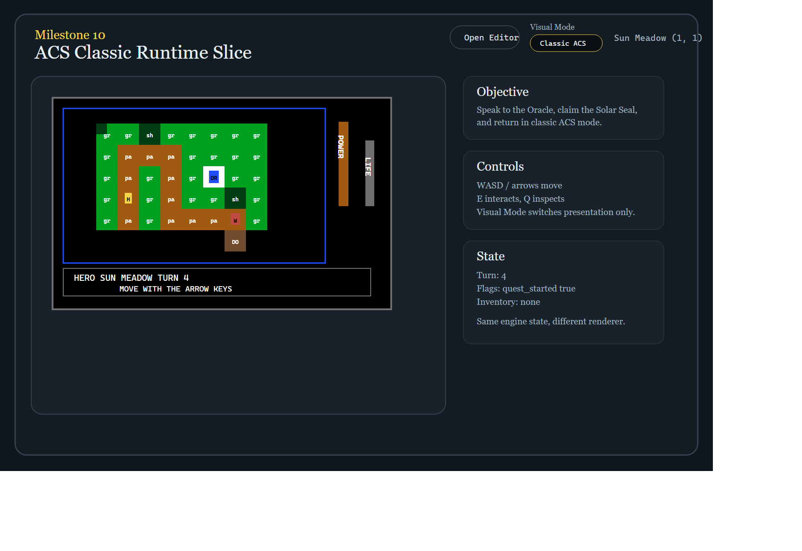
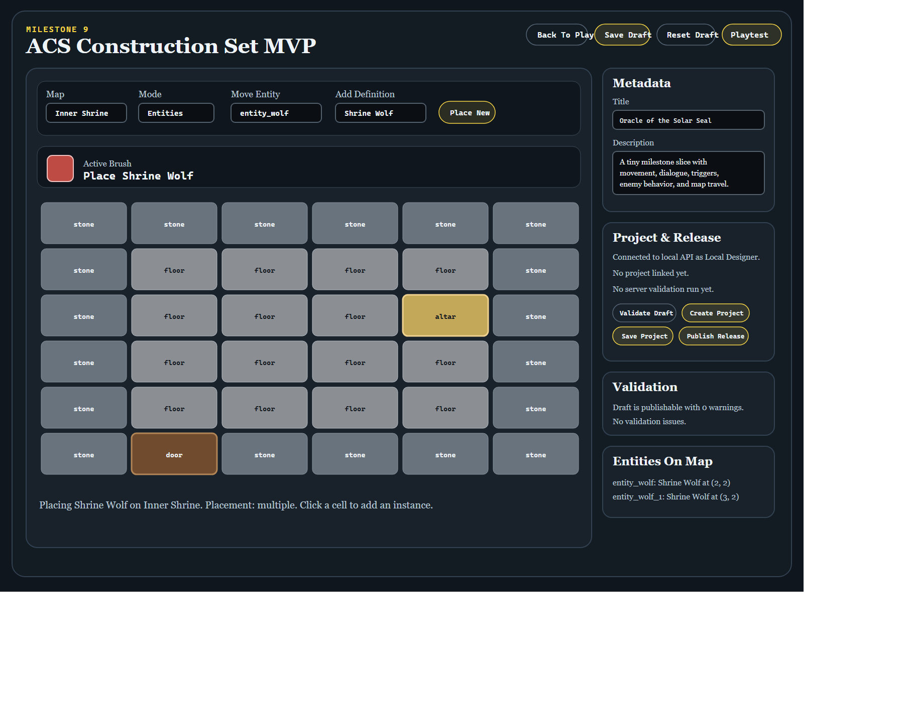
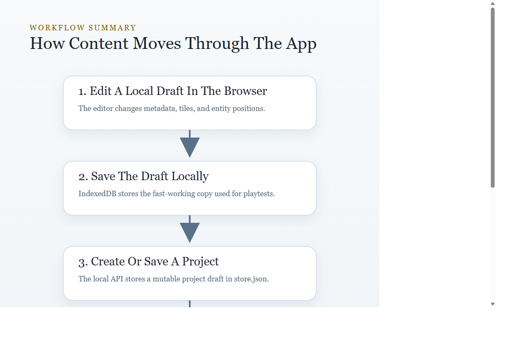

ACS Milestone 7
User Guide
This guide explains how to run the current application, play the sample adventure, save progress, use the editor, make a simple map edit, and move from a local draft to a published release.
- The playable runtime at
apps/web/index.html - The browser editor at
apps/web/editor.html - The local project and release API at
apps/api/dist/index.js

Starting The Application
Build the workspace if needed, then start both servers from the repo root.
Web Server
node .\apps\web\server.mjsDefault URL:
http://localhost:4173/Common alternate URL in this environment:
http://localhost:4317/API Server
node .\apps\api\dist\index.jsLocal API check:
http://localhost:4318/api/sessionPlaying The Game
The runtime can load the built-in sample adventure, a local draft playtest, or a published release.
- Speak to the Oracle.
- Enter the shrine.
- Claim the Solar Seal.
- Return to the Oracle.
WASDor arrow keys moveEinteractsQinspectsEnterorSpaceadvances dialogue
- Map and player position
- Session source
- Objective panel
- Save controls
- State summary and event log
Saving And Loading Progress
The runtime uses separate local save slots for the sample adventure, draft playtests, and published releases.
- Save stores the current runtime snapshot in IndexedDB.
- Load restores the most recent snapshot for the current source.
- Reset restarts the live session without deleting the saved snapshot.
Using The Editor
Open the editor at http://localhost:4317/apps/web/editor.html.

The current editor supports metadata editing, tile painting with a persistent brush, repositioning existing entities, validation, local draft saves, backend project saves, publishing releases, and opening those releases in the runtime.
Back To PlaySave DraftReset DraftPlaytest Draft
Mapchooses the current mapModeswitches between Tiles and EntitiesTilepicks the tile to paintEntitypicks the existing entity to moveActive Brushshows the currently loaded tile brush in tile mode
Tile Editing
- Choose
Tilesmode. - Select a tile id from the dropdown.
- Check the
Active Brushpreview to confirm the selected tile. - Click a cell in the grid to paint a single tile, or click and drag to paint across multiple cells.
The selected tile stays loaded like a brush until you choose a different tile.
Entity Editing
- Choose
Entitiesmode. - Select an existing entity instance.
- Click the destination cell.
Current limitation: the editor can move existing entities, but it does not yet create or delete them.
Validation
The validation panel runs the shared schema validator on the current draft and shows either No validation issues. or a list of problems.
Tutorial: Make A Simple Map Edit And Play It
Because the current editor cannot create a brand-new map yet, the easiest useful tutorial is to modify one of the built-in maps and then playtest the edited version.
We will edit Inner Shrine, paint a few tiles to make the room feel different, save the draft, and open that draft in the runtime.
- Open the editor at
http://localhost:4317/apps/web/editor.html. - Choose
Inner Shrinein theMapdropdown. - Set
ModetoTiles. - Select
floorin theTiledropdown. - Use the selected tile like a brush. Click individual cells or hold the mouse button down and drag across multiple cells to paint continuously.
- Leave the
doortile in place so the map exit still works. - Leave the
altartile in place if you still want the shrine reward trigger to work. - Optionally change the adventure title in the metadata panel so your draft is easy to recognize.
- Click
Save Draft. - Click
Playtest Draft. - In the new runtime tab, walk to the shrine and confirm that the room layout matches your edits.
If the local API is running, you can continue by clicking Create Project, Save Project, Publish Release, and then Open Latest Release.
Projects And Published Releases

The editor can move a draft through four project stages:
- Create Project: create a mutable backend project from the current draft.
- Save Project: update the mutable backend draft.
- Publish Release: create an immutable release snapshot.
- Open Latest Release: launch that published release in the runtime.
Save Draftwrites to browser storage.Save Projectwrites to the local API.Publish Releasefreezes a release snapshot rather than editing it in place.
Where Data Lives
- Runtime saves
- Local drafts
- Remembered active project id
- Mutable project drafts
- Immutable published releases
- Stored locally in
apps/api/data/store.json
Current Limitations
- No real user accounts yet
- No cloud backend yet
- No asset upload flow yet
- No creation or deletion of maps in the editor yet
- No creation or deletion of entity instances in the editor yet
- No trigger editor or dialogue editor yet
- The runtime still uses simple colored tiles and abstract markers
Troubleshooting
The editor says the API is unavailable
node .\apps\api\dist\index.jsA published release will not open
- The API may not be running.
- The release id may not exist anymore.
- The local API store may have been cleared.
My draft changes are gone
- Use
Save Draftfor browser-local storage. - Use
Save Projectfor backend storage.
Playtest Draft opens the sample adventure instead
The runtime falls back to the built-in sample when it cannot find the draft key passed by the editor.